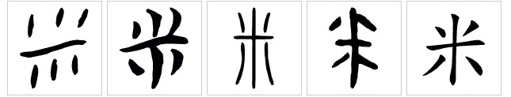

中文词汇总表 (Сводная таблица китайских слов)
目录 (Содержание)
汉字 (hàn zì) - китайские иероглифы
偏旁 (piān páng) - Ключи (радикалы)
什么是"偏旁"：偏旁（piān páng）— это как приставки и корни в русском языке. Они помогают понять значение и написание иероглифа.
"言" — это язык, часто встречается в иероглифах, связанных с языком, таких как "读" (читать) и "说" (говорить).
"人" — это человек, часто встречается в иероглифах, связанных с человеком, таких как "她" (она) и "他" (он).
"犬" — это древнее название собаки в китайском языке, часто встречается в иероглифах, связанных с животными. таких как "狗"（собака）,"猫"（кот）.
Как менялся "犬" в китайских иероглифах за последние 3000 лет:
"水" означает 'вода'. Эти три точки слева (氵) похожи на капельки воды. Это часто значит, что иероглиф связан с водой или жидкостью, таких как "汤(tāng)" , "汁(zhī)".
"食" означает еда. Это часто значит иероглиф связан с едой, таких как "饭" ， "饺".
名词 (míng cí) - существительное
关于人(guān yú rén de) - о людях：
"中" — средний ,центр "中国" — в древнем Китае люди считали, что их страна находится в центре мира, поэтому называли себя "中国".
"俄" — произношение в китайском языке похоже на произношение "Россия" в русском языке, поэтому в китайском языке страну называют "俄国".
Китайцы считают, что "国" — это собрание "家", поэтому "国家" = "国".
关于动物 (guān yú dòngwù) - о животных：
关于食物和饮料 (guān yú shíwù hé yǐnliào) - о еде и напитках：
Слева знак 'еда' (食字旁 shí zì páng) показывает, что иероглиф связан с едой. А правая часть '反 fǎn' помогает понять, как его читать (отвечает за произношение).
Это зёрнышки (плоды) растения, которое называется '稻子 dàozi' (рис, растение). Иероглиф '米' был похож на колосок риса , на котором нарисованы несколько зёрнышек.
Левая часть '饣' (ключ «еда»): Указывает на то, что значение иероглифа связано с едой.
Правая часть '交' (jiāo): Указывает на произношение. Звучание '交' (jiāo) и '饺' (jiǎo) похоже.
关于地点 (guān yú dìdiǎn) - о местах：
超-супер 市-маркет
房-комната 厨-готовка комната для готовки
关于物品 (guān yú wù pǐn) - о предметах：
关于方位的 (guān yú fāng wèi de) - о направлениях：
关于时间 (guān yú shí jiān) - о времени：
动词 (dòng cí) - глагол
普通动词（pǔ tōng dòng cí）- обычные глаголы
我有一只小狗 - У меня есть собачка.
做饭， 做早饭，做面条
去超市，去饭店。
买牛奶，买面包
Примечание:
- являться: 我是老师 - Я учитель/Я являюсь учителем.
- Функция выражения суждения, "是" в данном случае не имеет прямого аналога в русском языке: 他是谁？ - Кто он?
Примечание:
- Означает действие, которое должно произойти в будущем, и ставится перед глаголом: 我明天会学中文 - Завтра я буду учить китайский язык. 她会来我家 - Она придет в мой дом.
动词词组（dòng cí cí zǔ）- глагольная фраза
形容词 (xíng róng cí) - прилагательное
副词 (fù cí) - наречие
代词 (dài cí) - местоимение
这是什么? - что это ?
什么人？ - [Какой/Что за] человек?
Примечание:
- где: 这是哪？ Где это?
介词 (jiè ci) - предлог
Примечание:
- в / находиться: 我在中国 - Я в Китае / Я нахожусь в Китае
- Означает, что действие происходит в данный момент. Обычно располагается перед глаголом: 我在学中文 - Я （сейчас） учу китайский язык.
助词 (zhù cí) - вспомогательное слово
他在家 - Он дома
他在家吗？ - он дома?
我知道了 - Я (уже) узнал.
他怎么学中文？ - Как он учит китайский язык?
Примечание:
Следует после местоимения, указывая на принадлежность кому-то.
我 (wǒ) - я 我的 (wǒ de) - мой
爸爸 (bà ba) - папа 爸爸的（bà ba de）- папин
她是爸爸的姐姐 - Она сестра папы
量词 (liàng cí) - счётное слово
В отличие от русского языка, в китайском между числительным и существительным требуется счетное слово.
Например:
один человек - 一个人 √
один человек - 一人 ×
один человек - 一个人
Часто используется перед существительными, обозначающими животных. 一只小猫 - Одна кошечка.
数词 (shù cí) - числительные
两 = 二 。 В качестве счётного слова используется "两", а не "二".
Два человека ： 两个人 √ 二个人 ×
Две страны : 两个国家 √ 二个国家 ×
三千四百二十五(3425) - три тысячи четыреста двадцать пять.